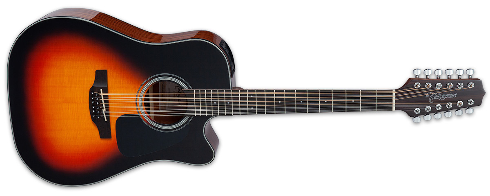

Esta es la guitarra docerola
Las cuerdas están distribuidas en pares, que en general son tocadas simultáneamente. Las dos cuerdas en cada par grave suelen tener una diferencia de una octava, mientras los pares de cuerdas agudas están afinadas al unísono. La afinación de la segunda cuerda del tercer par (Sol) varía: algunos guitarristas usan un par de cuerdas unísonas, mientras otros prefieren utilizar las cuerdas octavadas para conseguir el sonido más acampanado y agudo que caracteriza a esta forma de afinación. Otros, ya sea en busca de un tono distintivo o por una cuestión de comodidad, retiran algunas de las cuerdas dobles. Por ejemplo, quitando las cuerdas agudas de los pares graves se simplifica el tocar líneas de bajo, pero por otro lado se mantienen las cuerdas dobles en los pares agudos para los rasgueos.
Las cuerdas están ordenadas de tal forma que la primera cuerda de cada par en ser tocada cuando se rasguea de arriba abajo es la más aguda; sin embargo esta convención fue rota por Rickenbacker en su modelo 360/12.
La tensión generada por las cuerdas es alta, y debido a ellos, las guitarras de doce cuerdas tienen fama de combarse en pocos años. Algunas guitarras de doce cuerdas tienen soportes estructurales heterodoxos para prevenir, o al menos posponer, ese destino, a costo de mayores precios y pérdida de tono. Hasta hace poco, las guitarras de doce cuerdas eran casi universalmente afinadas más bajo que el tradicional "Mi-La-Re-Sol-Si-Mi", para reducir la tensión sobre el instrumento. Se sospecha que el bluesman Lead Belly usaba una afinación en Do

Esta es la guitarra docerola